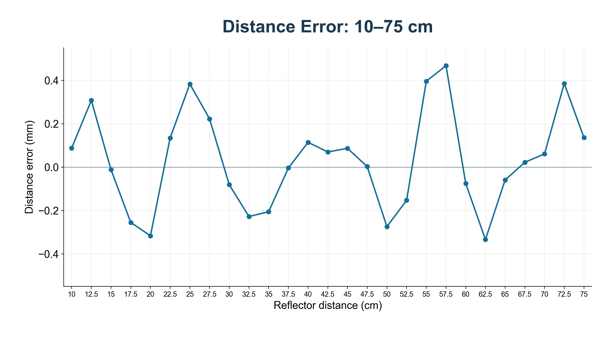

2026-10-21。只修改 Main 的搜索上限及软件对应范围，独立 Chirp/FFT 实验保持原样。
默认 TX 仍为 40 kHz 中心、4 kHz 带宽、20 ms、幅度 0.25。RX 延迟 1 ms / 采集 19 ms；ADC、CIC /32、672 有效点、1024 FFT、Kaiser4、插值和时钟全部保持原样。

10–75 cm，每隔 2.5 cm，共 27 点。理想单回波模型中最大绝对距离误差 0.467 mm，RMSE 0.226 mm。 75 cm 对应理想拍频 874.636 Hz，新版输出 874.794 Hz，离线换算 75.0136 cm，误差 +0.136 mm。
本次已经把 Main 的搜峰范围设为单一配置来源：02_RTL/V0/Simulation/FFT/main_settings.json。
以后修改 search_max_hz，运行同目录 configure_main.py，即可同步生成 RTL 的频点范围、03_SW 的检查常量和 Main 控制台查看器的范围常量。
本次 500 改为 2000，RTL 上界从第 14 格改为第 57 格。GUI 的说明文字和参考频率输入范围读取这些生成常量。
修改 JSON 不会直接改变板上硬件：仍需重新编译 Main 和 03_SW，再下载新 SOF 并启动新版上位机。当前上下限是编译配置，串口不支持运行时修改它们。
25 Hz 的短窗精度限制仍然存在，扩大搜索上限不会增加低频观测周期。2000 Hz 是搜索设置，不能据此宣称整个 25–2000 Hz 范围达到本图的距离误差。
| 距离 cm | 理想拍频 Hz | 输出 Hz | 换算距离 cm | 误差 mm | 峰格 |
|---|---|---|---|---|---|
| 10.0 | 116.618 | 116.720 | 10.0087 | +0.087 | 3 |
| 12.5 | 145.773 | 146.131 | 12.5307 | +0.307 | 4 |
| 15.0 | 174.927 | 174.913 | 14.9988 | -0.012 | 5 |
| 17.5 | 204.082 | 203.784 | 17.4745 | -0.255 | 6 |
| 20.0 | 233.236 | 232.867 | 19.9684 | -0.316 | 7 |
| 22.5 | 262.391 | 262.547 | 22.5134 | +0.134 | 8 |
| 25.0 | 291.545 | 291.992 | 25.0383 | +0.383 | 8 |
| 27.5 | 320.700 | 320.959 | 27.5222 | +0.222 | 9 |
| 30.0 | 349.854 | 349.760 | 29.9919 | -0.081 | 10 |
| 32.5 | 379.009 | 378.743 | 32.4772 | -0.228 | 11 |
| 35.0 | 408.163 | 407.924 | 34.9794 | -0.206 | 12 |
| 37.5 | 437.318 | 437.313 | 37.4996 | -0.004 | 13 |
| 40.0 | 466.472 | 466.606 | 40.0114 | +0.114 | 13 |
| 42.5 | 495.627 | 495.708 | 42.5070 | +0.070 | 14 |
| 45.0 | 524.781 | 524.882 | 45.0086 | +0.086 | 15 |
| 47.5 | 553.936 | 553.939 | 47.5002 | +0.002 | 16 |
| 50.0 | 583.090 | 582.770 | 49.9725 | -0.275 | 17 |
| 52.5 | 612.245 | 612.066 | 52.4847 | -0.153 | 18 |
| 55.0 | 641.399 | 641.861 | 55.0396 | +0.396 | 18 |
| 57.5 | 670.554 | 671.099 | 57.5467 | +0.467 | 19 |
| 60.0 | 699.708 | 699.621 | 59.9925 | -0.075 | 20 |
| 62.5 | 728.863 | 728.473 | 62.4666 | -0.334 | 21 |
| 65.0 | 758.017 | 757.948 | 64.9941 | -0.059 | 22 |
| 67.5 | 787.172 | 787.198 | 67.5022 | +0.022 | 23 |
| 70.0 | 816.327 | 816.397 | 70.0061 | +0.061 | 23 |
| 72.5 | 845.481 | 845.930 | 72.5385 | +0.385 | 24 |
| 75.0 | 874.636 | 874.794 | 75.0136 | +0.136 | 25 |
27 点 CSV · 500 Hz / 2000 Hz 对照 · 检查结果 · 不变项核对 · 源码与测试证据
重新运行：python run_sweep.py --project 工作工程目录 --output 新的输出目录；重绘图：python plot_results.py。